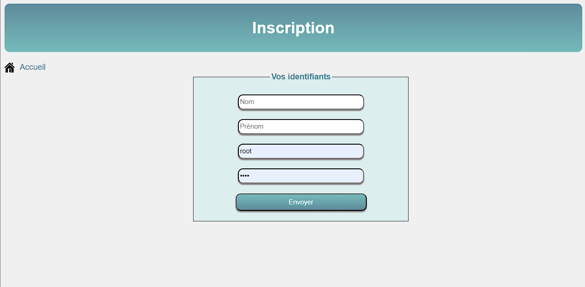
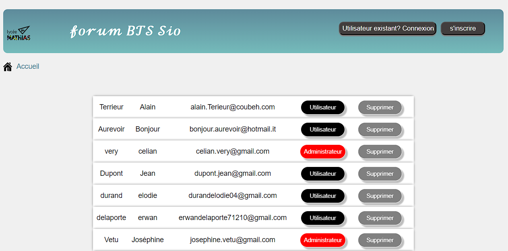
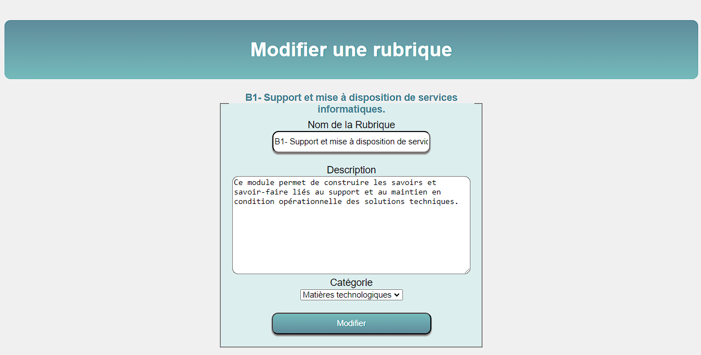
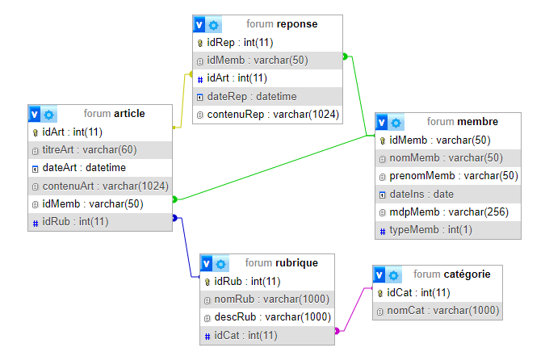

Forum BTS SIO
Lors de ma première année de BTS SIO, j'ai travaillé en groupe sur un projet de site web.
Le forum s'appelle BTS SIO, il met en relation les étudiants et les professeurs d'une classe. Les étudiants peuvent poser des questions aux professeurs à propos des cours. Ils peuvent aussi communiquer avec les différents élèves des classes.

Chaque matière de la filière a une catégorie dans le forum. En cliquant sur une catégorie on accède aux articles écrits par les utilisateurs. Chaque utilisateur peut ensuite y répondre. Seuls les modérateurs peuvent supprimer les articles ainsi que les réponses.
Nous avons créé des espaces de connexion et d'inscription intuitifs pour les utilisateurs. Chaque utilisateur obtient un avatar composé de la première lettre de son prénom
Les administrateurs ont accès à une page spéciale administrateur.php. Ils peuvent y supprimer ou de changer les droits des membres en cliquant sur les boutons ci-dessous. Ils peuvent aussi ajouter, modifier ou supprimer des rubriques.
 Le projet a été réalisé avec php, html et css. Pour rendre le site intéractif, gérer les données des utilisateurs et les rubriques, nous avons créé une base de données mySQL. La modélisation de la base de données a été réalisée de manière à stocker et à mettre en relation tous les éléments nécessaires au bon fonctionnement du site.
Les informations des utilisateurs sont stockées dans la table membre, telles que leur email (idMemb) nom, prénom, date d'inscription, leur mot de passe crypté et leur type de membre. J'ai créé aussi des tables pour les rubriques, les articles leurs catégories et leurs réponses. Les tables sont mises en relation entre elles pour assurer une bonne cohérence et intégrité des données. Ces relations sont mises en avant dans le schéma relationnel suivant:
Compétences développées
Travailler en mode projet
Gérer le patrimoine informatique
Mettre à disposition des utilisateurs un service informatique
Organiser son développement professionnel